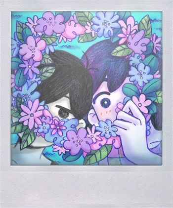
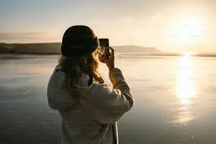
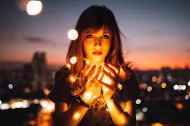
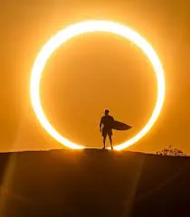
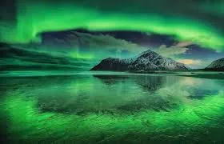

Fotografia · São Paulo · 2024
Cada fotografia é uma decisão — de parar, olhar, e registrar o que o olho comum deixa passar. Trabalhamos com luz, silêncio e precisão.
Ver portfólio →Frame nasceu da crença de que a fotografia não é apenas técnica — é uma forma de escuta. Cada projeto começa com uma conversa, uma escuta atenta do que você quer preservar.
Com mais de uma década de experiência, transformamos momentos em imagens que duram gerações. Do retrato íntimo ao projeto editorial de larga escala.





01
Sessões individuais, casais ou família. Ambientes externos ou estúdio controlado. Cada retrato captura quem você é.
02
Fotografia para marcas, produtos e campanhas. Imagens que comunicam com precisão e elegância visual.
03
Casamentos, formaturas e eventos corporativos. Registros discretos que preservam cada detalhe importante.